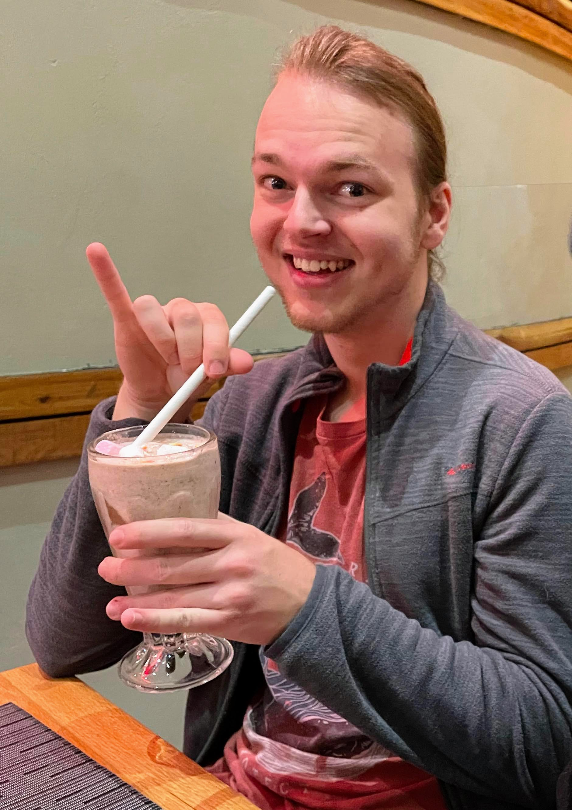

At a glance:
-

- WSOA Digital Arts Student, 3rd Year.
- Organized
- I love travel, and aim to see every continent in my life.
- I'm a planner and a leader when the situation calls for it.
- I try my best to always be patient and caring.
- I enjoy helping others by teaching them new skills.
- I have experience earning a supplementary income through a range of ventures.
- I have various hobbies, with most of them now being related to my skillset through my degree.
- I'm part of the rock climbing club at Wits.
- I do gym and rowing off campus.
- I know five coding languages.
- I am familiar with Unity and Web development.
- I have done a toastmasters course.
Experience and hobbies:
I have prior experience in small entrepreneurial ventures. During lockdown I ran a successful business mowing lawns, I take art/graphic design commissions and I regularly dog and house sit. I have also done odd jobs in tech repair along with data capture for a financial planner.
My hobbies are playing games, watching shows (particularly animated ones), writing, reading, comics.
I've tutored classmates over the years, both helping them catch up on work and teaching them new skills that they're struggling with.
I am part of the Rock Climbing club at Wits, with the goal of improving my skills to a high level and being part of the community. I also do rowing and gym off campus for physical fitness.
I have done a toastmasters course, and use the skills gained from it to approach public speaking. I always strive for a professional standard whenever I present, applying principals learned from the toastmasters course.
Thanks to my studies, I am knowledgeable in five coding languages: Python, JavaScript, CSS, HTML and C#. I am also familiar with web design, having made two websites now and I'm starting on my third soon. I am familiar with the Unity engine, since it is the tool I use to practice game design principles.
 BTonkin5@Gmail.com
BTonkin5@Gmail.com (+27) 61 543-4730
(+27) 61 543-4730